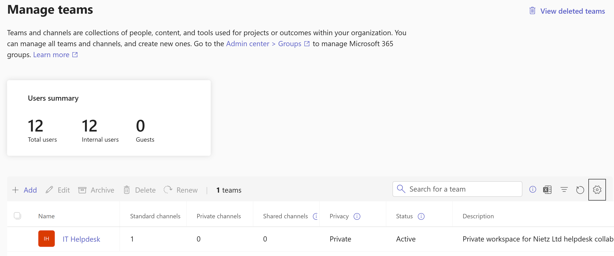
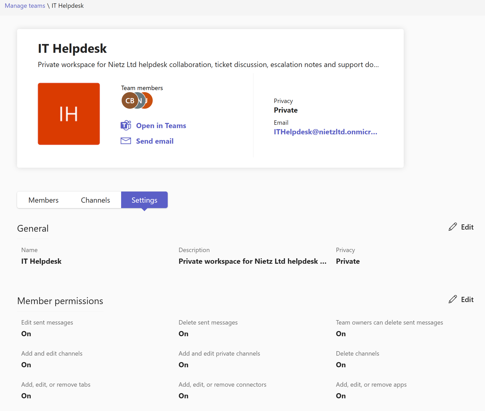
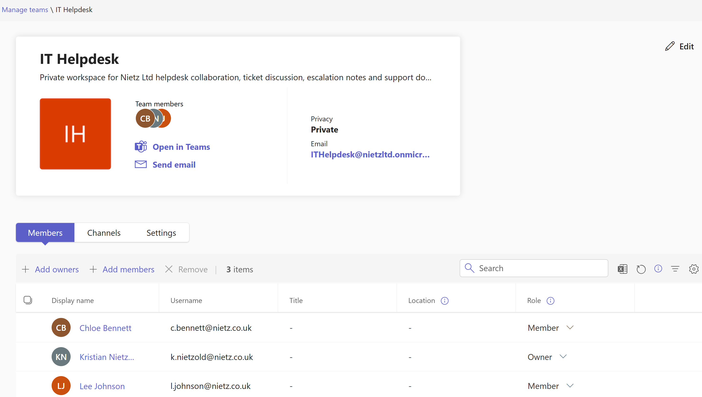
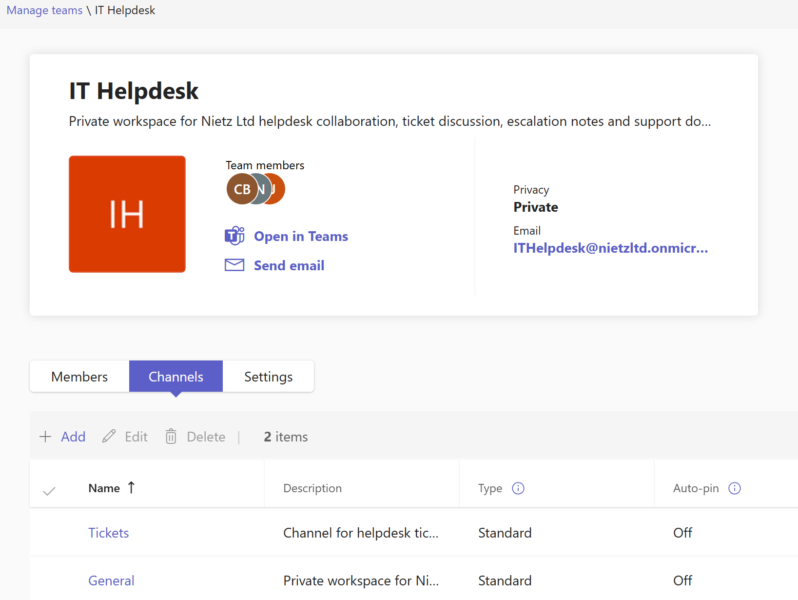
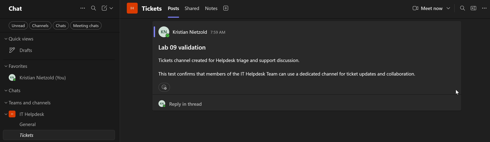
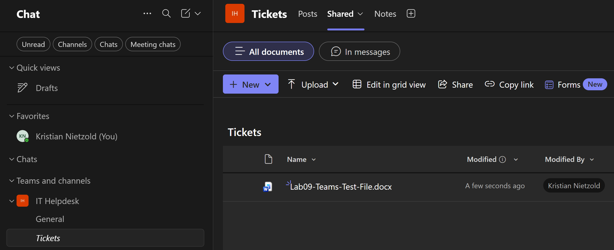
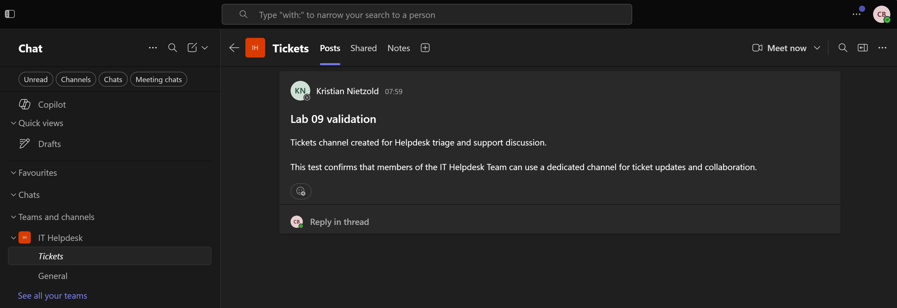
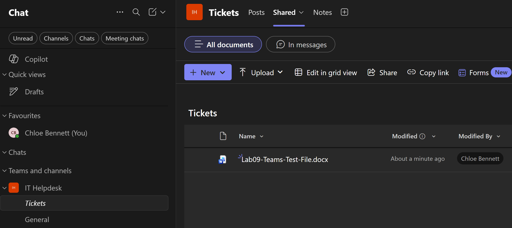
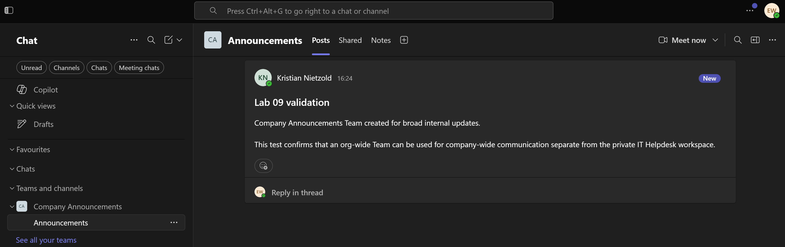

Lab 09: Microsoft Teams Collaboration
Configured Microsoft Teams collaboration for Nietz Ltd through a private helpdesk workspace and a separate organisation-wide announcements team, validating membership, channel posts and shared files.
Overview
In this lab, I extended the Microsoft 365 environment into Microsoft Teams collaboration. I used the existing Nietz Ltd users and created a private IT Helpdesk Team for restricted support collaboration.
I also created a separate Company Announcements Team as an org-wide communication workspace. This kept the support collaboration model separate from broad company updates.
This lab focuses on Teams as the user-facing collaboration layer. The deeper SharePoint and OneDrive file collaboration work is handled in the next lab.
Objective
The objective was to create a controlled Teams workspace, configure owners and members, validate a standard support channel, confirm file collaboration through the Shared area, and prove access from standard user accounts.
Environment
| Component | Value |
|---|---|
| Company | Nietz Ltd |
| On-premises AD domain | corp.nietz.co.uk |
| Microsoft 365 / tenant domain | nietz.co.uk |
| Daily administrator | k.nietzold@nietz.co.uk |
| Primary Team | IT Helpdesk |
| Primary Team privacy | Private |
| Primary Team owner | k.nietzold@nietz.co.uk |
| Primary Team members | c.bennett@nietz.co.uk, l.johnson@nietz.co.uk |
| Support channel | Tickets |
| Member validation user | c.bennett@nietz.co.uk |
| Org-wide Team | Company Announcements |
| Org-wide validation user | e.wilson@nietz.co.uk |
| Previous lab dependency | Lab 08: External Mail Flow and DNS Records |
| Next lab dependency | Lab 10: SharePoint and OneDrive File Collaboration |
Configuration
1. Private Helpdesk Team Created
I created the IT Helpdesk Team as a private workspace for helpdesk collaboration.

2. Team Privacy and Settings Confirmed
I reviewed the Team settings and confirmed that the IT Helpdesk workspace was configured as a private Team.

3. Team Owners and Members Configured
I configured Kristian Nietzold as the Team owner and added Chloe Bennett and Lee Johnson as members.

4. Standard Tickets Channel Created
I created a standard Tickets channel inside the IT Helpdesk Team for ticket discussion and support updates.

5. Channel Post Created
I posted a Lab 09 validation message in the Tickets channel to confirm that the channel was usable for helpdesk conversation.

6. Test File Uploaded to Shared Area
I uploaded Lab09-Teams-Test-File.docx to the Tickets channel Shared area to validate Teams file collaboration.

7. Member User Team Access Validated
I signed in as Chloe Bennett and confirmed that a standard member could access the private IT Helpdesk Team and the Tickets channel.

8. Member User File Access Validated
I confirmed that Chloe Bennett could access the uploaded test file from the Tickets channel Shared area.

9. Org-Wide Announcements Team Validated
I created the Company Announcements Team as an org-wide communication workspace and validated access as Emily Wilson.

Validation
The lab was validated when the private IT Helpdesk Team existed, privacy was confirmed, ownership and membership were assigned, the Tickets channel was available, a channel post was created, a test file was uploaded, and Chloe Bennett could access both the channel and shared file.
The supporting org-wide validation was completed when Emily Wilson could access the Company Announcements Team and view the announcement post.
Key Technical Outcomes
This lab demonstrated how Teams workspaces are controlled through privacy, ownership, membership, channels, posts and user-side validation.
It also showed the difference between a restricted private Team for support collaboration and an org-wide Team for broad internal communication.
Summary
- I created the private
IT HelpdeskTeam for restricted helpdesk collaboration. - I configured Kristian Nietzold as owner and added Chloe Bennett and Lee Johnson as members.
- I created the
Ticketsstandard channel for support discussion. - I validated channel posting and uploaded a test file to the channel Shared area.
- I confirmed that Chloe Bennett could access the Team, channel and shared file.
- I created and validated the org-wide
Company AnnouncementsTeam with Emily Wilson.